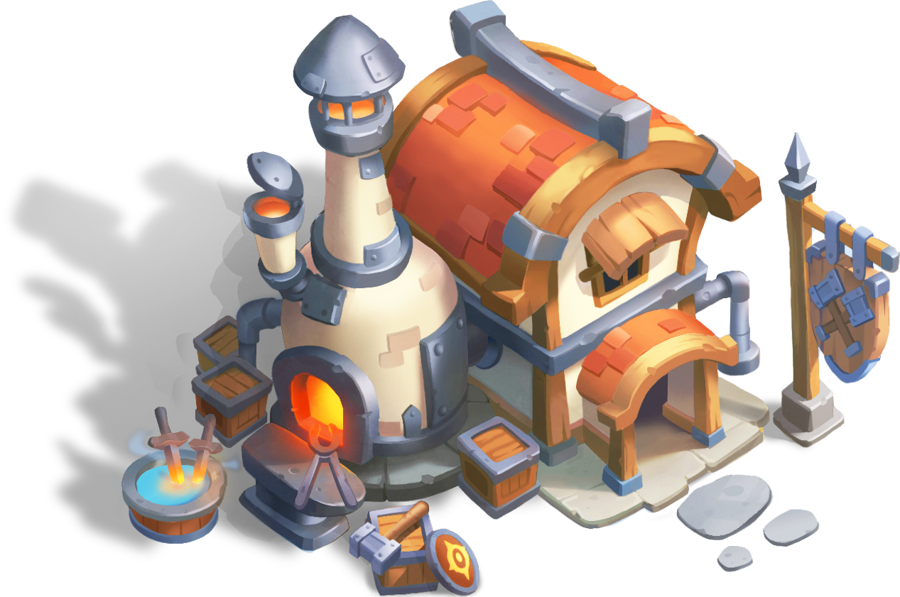

Blacksmith

Blacksmith unlocks about 7 days after server opening. The building can be used for upgrading Blacksmith Tech and crafting Hero Gears (Weapons).Blacksmith Tech
Blacksmith Tech starts at level 1 and maximizes at level 2000. Blacksmith Tech level can be enhanced by consuming Forge Hammers.
Blacksmith Tech provides maximum 700000000 Blacksmith Base Power to each Hero; if a Troop March has 3 Heroes, the maximum Blacksmith Base Power is 2100000000.
Hero Gears
Crafting a Hero Gear (Weapon) requires 100 Forge Blueprints. Each Hero can be equipped with maximum 1 Hero Gear which provides bonus power based on Blacksmith Base Power.